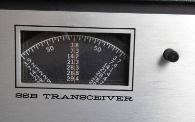
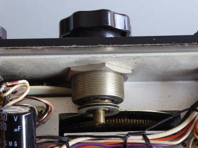
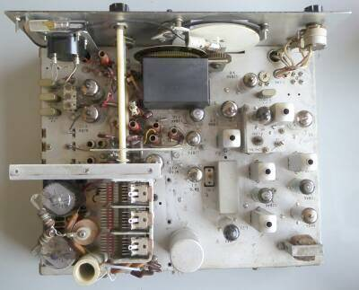
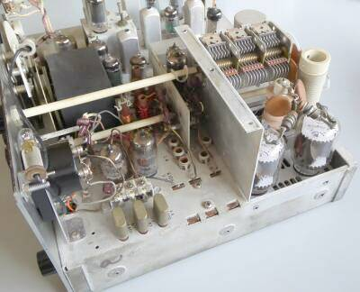
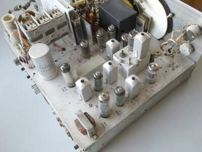
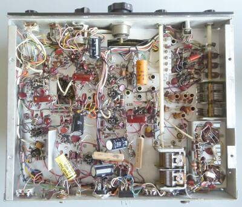

 |
本機は、プリミックス方式を採用したシングル・コンバージョン方式の最初の製品かと思います
ローコスト化を目指す方法のひとつとして、採用したのではないかと思われます
５ＭＨｚ台のＩＦと、９ＭＨｚ前後のＶＦＯを使用し、３．５ＭＨｚ帯と１４ＭＨｚ帯においては、ヘテロダインクリスタルは不要としています
国産では、ＹＡＥＳＵ ＦＴ-２００がこのプリミックス方式を国内最初に採用（本当は、泉工業 パロス２２-ＴＲでしょうが）、ＩＦとＶＦＯの周波数を反対に使用しています
|
 |
ローコスト化のもう一つは、ＶＦＯダイヤルのリードアウトで、本機は５ＫＨｚとしてあります（写真左上）
例えばですが、HeathKit HWシリーズと同じです
ダイヤルドライブ機構も、Collins、HeathKitｔと同じ、フリクションドライブ方式が採用されています
おおよそですが、ダイヤル１回転で２５ＫＨｚです
|
 |
シャーシ上面 終段部のシールドを外して写しています
黒い部分は、ＶＦＯ部
その右下に見える白い四角なものが５．２ＭＨｚクリスタル・フィルタです
メーターですがオリジナルではありません
前オーナーの手で交換されています（器用に取り付けられています、スケールも新たに印刷されたもの）
シャント抵抗が追加されています（念のため校正しました）
|
 |
サイドから、終段部のシールドを外して写しています
手前は、プリミックス部
見えているＶＣは、プレート同調用
ファイナルは、６ＪＢ６ パラです
黒く見えているところはＶＦＯ部 １２ＢＡ６ １本です
その後ろ、シールド板の奥がドライブ管６ＧＫ６です |
 |
リアから右半分
一番手前は、受信ＡＦ段
その奥がＩＦ段
別シャーシに収まっているのは、ＢＭ／ＴＸ-ＩＦＡｍｐ部です
中央に５．２ＭＨｚクリスタルフィルタが見えます |
 |
シャーシ底面
前のオーナーの手で、電解コンデンサが追加されています
見えているＶＣですが、
右端：ドライブ調整
中央寄り下：ファイナル・ロード
です
ドライブシャフトは、ちゃんと絶縁材が使用されています
|
|
本機ですが、一般的というか平均的な１００Ｗのトランシーバです
機能を含め、シングル・コンバージョン方式を採用したシンプルな設計で、
送信ファイナルは、６ＪＢ６ ２本 ＤＲＡＫＥ Ｔ-４シリーズ、あるいは上位のＮＣＸ-５と同じです
また、受信は高一中二の標準的な構成です
受信ＴＯＰ（ＡＮＴコイル）も、終段のπマッチを流用など、電気的なことに加え、構造も極めてシンプルに、すなわちリーズナブルにこさえてあります（ＡＮＴ切替リレーもありません）
２８ＭＨｚ帯は、２８．５～２９．１ＭＨｚをカバーするようになっています
ダイヤルスケールは、ほかに２８．０～２８．６ＭＨｚ、
そして２９．１～２９．７ＭＨｚの目盛りが用意してあります
電源は、手持ちのＮＣＸ-５の純正、ＮＣＸ-Ａを使用しました
感度低下、あるいはバンドによる送信パワーの違いなど、前オーナーの改造も含め手元に来た時点では色々ありましたが、再調整など行った結果、
送信：各バンド１００Ｗ前後
受信：０．５μＶ入力で、Ｓ／Ｎ１０ｄｂ前後
と、シンプルな設計ではありますが、基本的なところはきちんと押さえてある結果が得られました
多少送受信の同調ピークがずれているケースはありますが！
受信感度優先で調整を行えば、もう少し感度アップします
もちろん最近のマシンのように、混信あるいは近接信号に云々というような性能・能力は持ち合わせていません
ノイズブランカーやＲＩＴ機能もありませんし、CWフィルタ・オプションもなく、マーカー（１００ＫＨｚ）もオプションです
が、真空管マシンの特徴かもしれませんが、ノイズにイライラせずにボーッと安心して聞くことが出来ます！？
日本国内では、本機のような超シンプルというか割り切った実用設計のギアは、ほとんど見当たりません
ローコスト化を進める中で、プリミックス方式を採用したのは、本機が最初だったような気がします
１年後の１９６９年には、ファイナルが６ＬＱ６ ２本で、１１００Ｖを印加し、入力５００ＷＰＥＰとした、ＮＣＸ-５００が発売されました
こちらには、±３ＫＨｚが可変できるＲＩＴ機能も追加されました（つまみが一つ増えています） |